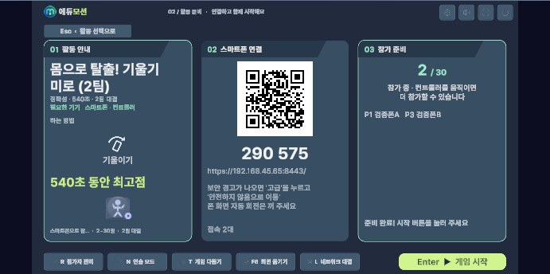
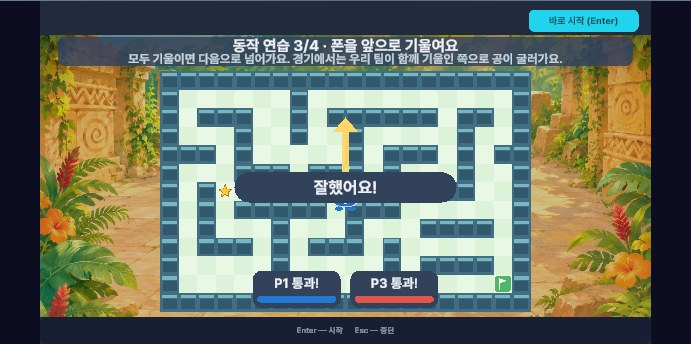
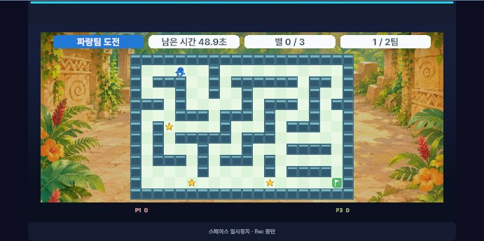
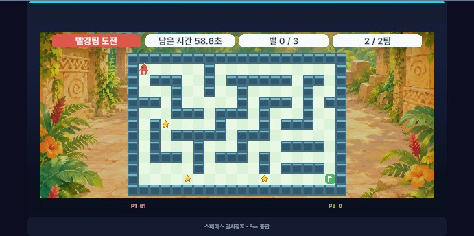
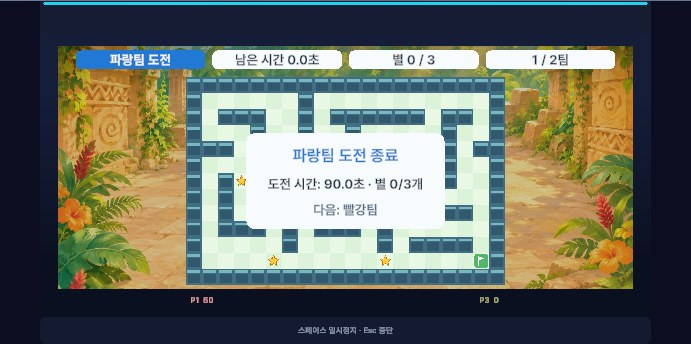
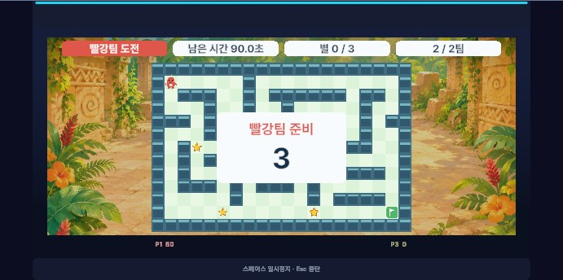
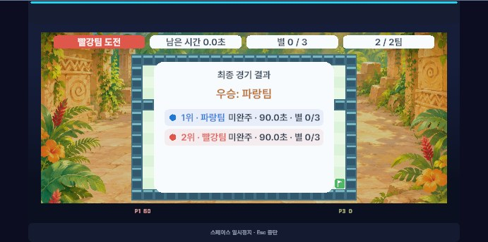
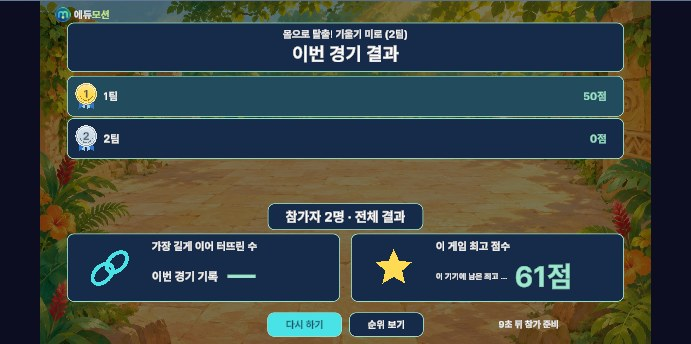

G002 몸으로 탈출! 기울기 미로 — C# 이식 확인
HTML 게임 「G002 기울기 미로 팀 챌린지」(원본)를 이 저장소의 C# 틀(판정 → 감독 → 무대)로 옮겼습니다. 11-04에는 「모두 동시 개인전」으로 옮겨 설치본 0.9.276부터 앱에 들어 있고, 2026-11-26 회원님 「원본대로 다시」로 원본의 팀 차례전(2~4팀이 같은 미로를 차례로, 팀별 제한시간, 완주 → 시간 → 별 → 거리 순위)으로 다시 만들었습니다. 앱에 이미 이어진 게임이라 이번에는 공용 파일도 함께 고쳤습니다(아래 「앱에 이은 것」).
팀 차례전 가지 · PR #141 · 처음 PR #44 · 진행 기록
변환 기록
- 2026-11-26 23:40병합 전 테스트 실행본 — PR #141 가지 4b5af8b로 맥에서 Windows 실행본을 만듦(393MB 출시 빌드, 컴파일 오류 0·고른 검사 150건 통과, 3D 캐릭터·재질 들어감 확인). 포털 실행 보조 프로그램은 Windows에서만 만들 수 있어 빠짐. 실물 폰·카메라·Windows 실행은 미확인 — 주개발자께 PR 댓글로 알림PR #141
- 2026-11-26 21:10앱에서 폰 컨트롤러로 한 판 확인(맥 에디터 SessionTest, 폰 페이지 두 대를 브라우저로 흉내) — 로비 → QR 참가 → 동작 연습 4단계 → 파랑팀 차례 → 빨강팀 준비 3초 → 빨강팀 차례 → 최종 순위 → 결과까지 두 판. 기울인 쪽으로 공이 가고(앞=위), 차례 아닌 팀 폰은 공을 못 움직이고, 점수가 판 기록과 같음(61:61 무승부, 50:0). 최신 main 합침(EditMode 6186/6197, 맥 전용 7건 제외) → 주개발자에게 병합 요청. 실물 폰·Windows 실행본은 아직PR #141
- 2026-11-26 16:45원본대로 다시 — 팀 차례전: 2·3·4팀이 같은 미로를 차례로(팀별 제한 60·90·120초), 차례인 팀 폰 기울기 평균으로 공 하나, 순위 완주→시간→별→거리, 입장 뒤 네 방향 동작 연습, 빈 팀 자동 조종, HTML 판. 맥 Unity 컴파일 오류 0 · EditMode 전체 통과(맥 전용 7건 제외)PR #141
- 2026-11-06 19:11본줄기가 main으로 바뀌어 main을 합쳐 최신으로 맞추고 main 대상 PR을 열었다(server-checks 통과, 충돌 없음)PR #44
- 2026-11-06 10:31배경 그림 — 정글 속 고대 유적 마당(탈출 모험, 앱 무궁화 마당과 같은 손그림 화풍, GPT 생성). 그림이 없으면 지금처럼 밤하늘, 체험판에도 깔림250b1de
- 2026-11-04 09:11확인 페이지 체험판에 원본 같은 시작 화면(설명·진행 방법·설정·경기 시작·안전), 시작 전에는 멈춰 있음27047ce
- 2026-11-04 08:36확인 페이지 사본 — 체험판이 120Hz 화면에서 공을 못 움직이던 걸음 셈 고침(C# 판정은 해당 없음)a773ceb
- 2026-11-04 08:27처음 변환 — 1~30명 동시 개인전(폰·컨트롤러 기울기), 별 +1 · 출구 +5 · 다시 출발30a16a3
직접 해 보기
C# 판정과 같은 숫자(미로, 공 반지름 0.325칸, 보통 6.25칸/초, 따라가기 9, 문턱 0.11, 1/60초 고정 걸음, 준비 3초 · 결과 5초 · 최종 6초)로 움직입니다. 원본처럼 시작 화면에서 팀 수·난이도·팀별 제한시간을 고르고 시작합니다. 시작하면 앱처럼 동작 연습(왼쪽·오른쪽·앞·뒤로 기울이기)이 먼저 나옵니다. 방향키나 WASD, 또는 미로를 누른 채 끌면 내가 파랑팀으로 폰을 기울인 것이 됩니다(↑ = 앞으로). Enter는 선생님 「바로 시작」입니다. 나머지 팀은 체험판에서 가장 짧은 길로 가는 자동 조종입니다(앱도 사람이 없는 팀은 자동으로 굴립니다).
몸으로 탈출! 기울기 미로
몸을 기울여 보물을 찾고 출구까지! 폰을 기울여 공을 굴려 미로를 탈출하세요. 벽에 부딪히면 튕기지 않고 멈춥니다. 팀별로 같은 미로를 도전해 성공 여부 → 걸린 시간 → 별 획득 수로 승리팀을 정합니다.
- 팀 수와 난이도, 제한시간을 정합니다.
- 팀별로 차례대로 경기를 합니다. 우리 팀이 함께 폰을 기울이면 공이 움직입니다.
- 별을 모으며 초록색 출구에 도착하면 성공!
- 모든 팀이 끝나면 승리팀과 순위를 발표합니다.
경기 설정
안전 학생은 제자리에서 작은 범위로 몸을 기울이고 주변 공간을 확보하세요.
흐름 — 참가 → 동작 연습 → 시작
| 단계 | 앱에서 |
|---|---|
| 참가 | 앱 로비에서 폰으로 들어오면 앱이 팀을 고르게 나눕니다(2·3·4팀 규칙 파일). 사람이 없는 팀은 봇이 채웁니다. |
| 동작 연습 | 네 단계 — 폰을 왼쪽 · 오른쪽 · 앞 · 몸 쪽으로 기울이기. 단계마다 모두가 그쪽으로 0.3초 기울이면 「잘했어요!」 뒤 다음 단계, 네 단계를 마치면 시작. 선생님 「바로 시작」은 그대로. |
| 경기 | 팀마다 준비 3초 → 도전(제한 60·90·120초) → 결과 5초. 마지막 팀 뒤 최종 순위 6초를 보이고 저절로 끝납니다. |
원본과 달라진 것 (2026-11-26 원본대로 다시)
11-04에는 회원님 결정으로 「모두 동시 개인전, 별 +1 · 출구 +5」로 옮겼습니다. 11-26 회원님 「원본대로 다시」로 원본의 팀 차례전을 되살렸습니다. 남은 차이는 앱 기기와 점수판에 맞추느라 생긴 것뿐입니다.
| 원본 | 앱판 | 까닭 |
|---|---|---|
| 팀마다 기기 하나(폰 기울기 · micro:bit · 키보드) | 차례인 팀 모두의 폰 기울기를 평균해 공 하나를 굴림(0.5초 넘게 소식이 없는 폰은 뺌). 다른 팀 기울기는 버림 | 앱은 사람마다 폰이 있다. 원본 첫 기기(폰 기울기)를 그대로 쓰고, 팀이 함께 기울여야 가게 했다 |
| 순위: 완주 → 빠른 시간 → 별 → 이동 거리 | 같은 순위를 무대 최종 화면에 그대로. 앱 점수는 완주 1000 + 남은 0.1초당 1, 못 하면 별 × 200 + 간 거리 0.1칸당 1을 팀 대표(자리 번호가 가장 앞) 한 사람에게 | 앱은 팀 합계 점수로 이긴 팀을 고른다. 이 점수의 차례가 원본 순위와 같다(검사가 무작위 기록 묶음으로 확인) |
| 팀 사이 「다음 팀 시작 →」 단추 | 결과 5초 뒤 다음 팀 준비 3초, 저절로 | 앱에는 선생님 단추가 없다 |
| 「센서 연결/권한」·「센서 중심 맞추기」 | 앱 폰 화면의 기울기 권한·기준 잡기 | 앱이 맡는다 |
| 「일시정지」·「이 팀 종료」 | 앱 일시정지·판 끝 | 앱이 판 시간을 쥔다 |
| 주황 공, 이모지(⭐ 🏁 🎉) | 차례인 팀 색 콩콩이, 도형 별·깃발 | 앱 캐릭터, 윈도·맥이 같게 |
| — | 입장 뒤 네 방향 동작 연습 | 주개발자 흐름(참가 → 동작 연습 → 시작) |
그대로 옮긴 것: 팀 2·3·4, 난이도 3단계(빠르기만), 팀별 제한시간 60·90·120초, 미로 20×13(한 글자도 같음), 공 반지름·닿는 거리·빠르기(원본 픽셀 ÷ 40), 따라가기 9, 문턱 0.11, 대각선 길이 1, 축마다 따로 움직여 벽에 막힌 축만 멈춤, 별 셋을 가장 짧은 길의 1/4·1/2·3/4에, 팀 이름·색(파랑·빨강·초록·보라), 결과 글(「완주 기록」·「도전 시간」·「공동 우승!」), 바닥·벽·출구 색.
HTML 판
앱 「AI로 게임 만들기 → HTML 붙여넣기」에 넣으면 도는 한 파일입니다(game.html). 규칙·숫자는 Unity 판과 같습니다.
| Unity 판 | HTML 판 | |
|---|---|---|
| 팀 차례·순위·팀 점수 | 같음 — 준비 3 · 제한 · 결과 5 · 최종 6초, 완주 → 시간 → 별 → 거리, 팀 평균 기울기, 빈 팀 자동 조종 | |
| 난이도·제한시간 | 규칙 파일(tiltMazeMode·tiltMazeLimit) | 보통·90초 고정(웹 게임에는 설정 칸이 넘어오지 않음, 팀 수는 앱 teams) |
| 동작 연습 | 네 방향 | 없음 — 앱이 시작을 알리면 첫 팀 준비 |
| 공 | 팀 색 콩콩이 | 팀 색 공 |
바꾼 파일
| 파일 | 무엇 |
|---|
앱에서 해 본 것 (2026-11-26 · 폰 컨트롤러)
맥 에디터 SessionTest Play(가지 66b096d, 회원 계정)에서 폰 컨트롤러 길 그대로 두 판 끝까지 했습니다. 로비 카드 → 참가 QR → 폰 2대(P1 파랑팀·P3 빨강팀) → 기준 다시 잡기 → 동작 연습 4단계 → 파랑팀 차례 → 빨강팀 준비 3초 → 빨강팀 차례 → 최종 순위 → 앱 결과 → 로비.
- 기울인 쪽으로 공이 갑니다 — 오른쪽 → 오른쪽, 뒤로(윗변을 몸 쪽) → 아래, 앞으로 → 위.
- 차례가 아닌 팀 폰을 기울이면 공이 움직이지 않습니다.
- 점수: 1판 두 팀 같은 길 → 61 : 61 무승부. 2판 파랑팀만 → 판 기록 50 : 0, 「우승: 파랑팀」, 앱 결과도 같은 점수.
- 폰은 실물이 아닙니다. 앱이 여는 폰 페이지를 브라우저 두 창에서 열고 W3C 정의대로 방향·중력 값을 넣었습니다(페이지 → 폰 서버 → 해석기 → 판정은 실제 코드). 실제 센서 부호·떨림·와이파이 지연은 못 봤습니다.
- 함께 본 것: 연습 문턱 0.5는 폰을 눕혀 들면(beta 20°) 좌우·앞뒤 35°로 넘지만, 60°로 세워 든 채 긴 축으로 30° 굴리면 0.25라 왼쪽·오른쪽 단계를 넘기 어렵습니다 — 주개발자에게 물음(PR #141).








검증한 것과 안 한 것
- 통과 판정·연습·점수·감독 검사 51건과 무대 검사 4건. .NET 8, C# 9, 경고를 오류로, NUnit 3.14. 이 저장소의 실제 파일(
Core/Input네 개,MatchActorKey,Participant·ParticipantRoster,SessionStateMachine,PoseSkeleton,QuizArt)과 함께 묶었고, 대역은Vector2·Vector3·Rect·Mathf·InterpreterPhase와 UI 함수 선언뿐입니다. Unity 실행기에서 돈 것이 아닙니다. - 원본 순위 무작위 기록 400개의 모든 짝(1만 쌍 넘게)에서 앱 점수 차례가 원본 순위(완주 → 시간 → 별 → 거리)와 뒤집히지 않습니다.
- 빨간불 확인 판정 규칙 32개(벽 · 문턱 · 끊긴 폰 빼기 · 차례인 팀만 · 평균 · 대각선 · 앞뒤 · 별 한 번 · 출구 · 제한시간 · 고정 걸음 · 준비 중 · 다음 팀 · 최종 · 판 닫기 · 새 판 · 자동 조종 · 대표 · 점수 식 다섯 · 연습 넷 · 기울기만 · y − z · 명단 · 대표에게만)를 하나씩 끄면 모두 검사가 실패했습니다.
- HTML 판 dfz 대역 위에서 2팀(사람 1 + 빈 팀)·3팀(모두 빈 팀)을 60·120Hz로 끝까지 — 오류 0, 빈 팀 자동 조종은 6.6초에 별 셋으로 탈출.
- 통과 맥 Unity 6000.5.9f1(빌드 대상 Win64, 가지 9767a1a): 컴파일 오류 0, EditMode 전체 6198건 중 통과 6187 · 실패 7(맥에서만 나는 시리얼 5·설치 경로 1·CameraChoice 1, main도 같음) · 건너뜀 4. TiltMaze 55건 모두 통과. PlayMode
SharedMatchHold2건 통과. 로비 묶음 표(catalog.json)와 표지 목록을 맥 Unity로 다시 만듦. HTML 판 앱 검사기 문제 없음. - 봄 앱 화면(맥 에디터
SessionTest씬, 가짜 장치·봇): 팀 도전 줄·준비 3초·안내 단계 동작 연습. 그림은 PR #141 본문. - 해 봄 앱에서 폰 컨트롤러로 결과 화면까지 두 판(맥 에디터 · 흉내 폰, 위 「앱에서 해 본 것」). 최신 main을 합친 가지 7c2d991: 컴파일 오류 0, EditMode 전체 6197건 중 통과 6186 · 실패 7(맥 전용, main도 같음).
- 안 함 실물 폰으로 한 판, Windows 실행본(
build-player.cmd), HTML 판 앱 실행(Windows 전용).
앱에 이은 것 (공용 파일)
- 흐름:
FlowTypes.PracticesInIntro·HasLongRound·MaxTeams에TiltMaze. 이제 안내 단계에서 연습을 돌고, 판 길이 상한은 540초(팀 넷 × (3 + 120 + 5) + 6)이며 판이 스스로 끝납니다. - 규칙:
flow.tiltMazeLimit(60·90·120, 필수) —GameRuleSet·검증기·JSON 스키마. 검증기는 TiltMaze를 팀전 흐름으로 받습니다.BotFill.Supports에도 더해 빈 팀에 봇이 섭니다(봇 팀은 판이 자동으로 굴림). - 화면: 감독이 다섯 게임과 같은 모양이 되어
NativePracticeStages의 손잡이(Maze)로 섭니다.UguiNativeActivities의 기울기 미로 전용 줄은 지웠습니다. - 규칙 파일:
g002-tilt-maze(2팀) ·-3teams·-4teams, 점수 규칙 셋(Squat +100 · Move +10 · Raise +1),victory.scopeTeam.GameTitles두 줄. - 로비 묶음:
builtin-games.csv세 줄(틀tilt-maze), 말 파일 12개family.name.tilt-maze,catalog.json은 맥 Unity로 다시 만들어 이 PR에 넣었습니다. - 말 표 12개 언어:
tiltMaze.*31개(팀 이름·도전 줄·준비·결과·최종·연습). ko·en 외 10개는 원어민 미확인. - 검사:
MovedHtmlGamesTests·RuleSetCensusTests·BuiltinEducationCatalogTests·HomeFamiliesTests·PlayMode 두 목록·서버NativeActivityValidationTests를 새 규칙에 맞췄습니다.
실물에서 봐 주셨으면 하는 것
- 팀 평균 — 팀원이 많으면(예: 30명 2팀 = 15명) 서로 다른 쪽으로 기울여 공이 잘 안 갈 수 있습니다. 원본 「팀원이 알려준 방향」 활동을 몸으로 하는 셈이지만, 너무 어려우면 대표 한 명만 조종하게 바꿀 수 있습니다.
- 앞뒤 방향 — 앞으로 기울이면 공이 위로(
TiltMazeSettings.ForwardSign−1). 반대로 느껴지면 그 값만 +1. - 점수판 숫자(예: 1873점)가 아이들에게 낯설 수 있습니다. 무대 최종 화면에는 원본처럼 「완주 · 12.3초 · 별 3/3」로 보입니다.